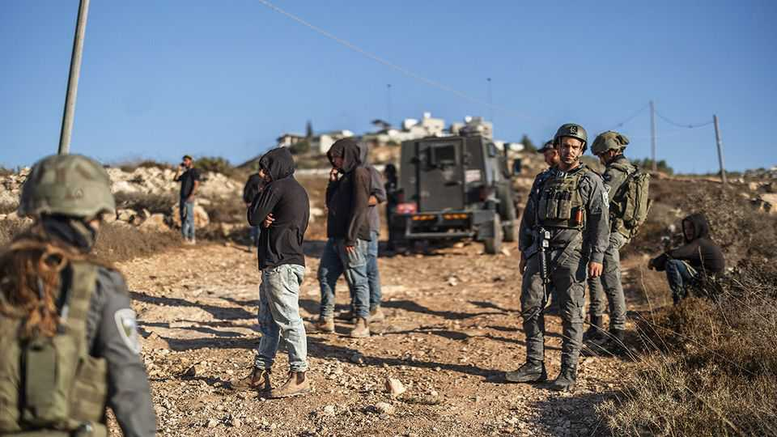
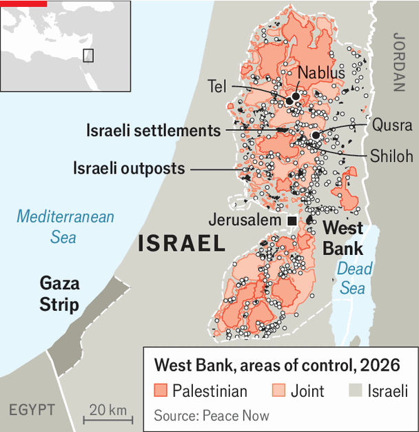
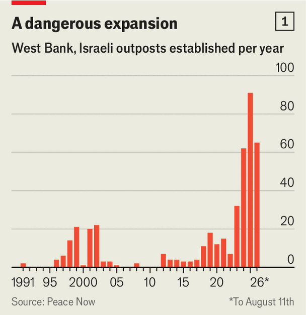
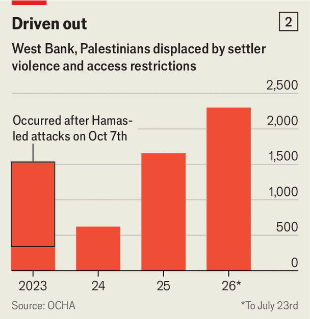

Violent Israeli settlers want to provoke a Palestinian uprising
They are operating with the support of Israel’s government

Aug 20th 2026
THE HILLS south of Nablus in the Israeli-occupied West Bank tell the story of a creeping annexation (see map). Winding dirt tracks to Palestinian villages are blocked by rocks and piles of earth, cutting off access from fields and olive groves. Israeli settlers have planted vines in neat rows, erected fences festooned with flags and brought in herds of goats. They patrol the area with new utility vehicles and assault rifles given to them by the Israeli government.
Their stated aim is to cause “friction” with adjacent Palestinian villages. That tends to lead to intervention by the Israel Defence Forces (IDF), often on the settlers’ side, followed by the expulsion of Palestinians and the expansion of outposts of Israeli settlements (see chart 1). Since the Hamas attack of October 7th 2023, and Israel’s subsequent war in Gaza, violent attacks by Israeli settlers in the West Bank have worsened and forced an increasing number of Palestinians to flee (see chart 2). As Israel prepares to go to the polls on October 27th, the failure of Binyamin Netanyahu, the prime minister, to rein in the settlers is making counter-violence by Palestinian militants increasingly likely.

Events over the past week show how much leeway settlers are granted. Tel Talpiot, the latest and northernmost outpost in the Shiloh settlement bloc, was set up earlier this year on a hill overlooking three Palestinian villages. On August 9th a group from Tel Talpiot occupied the courtyards of homes on the outskirts of the village of Qusra, setting up a makeshift shelter, terrorising the families and forcing them to hole up inside. IDF soldiers sent to “prevent friction” joined the settlers in prayer, rather than dislodging them.
The tactic, common in the West Bank, often succeeds in forcing Palestinian villagers to flee their homes (see chart 2), allowing the settlers to take over the surrounding land. This time was different for several reasons. Residents of Qusra, who had experienced similar attacks before, were quick to publicise this one and attract international attention. One of the besieged homes belongs to an American citizen. Mike Huckabee, the American ambassador, who usually supports the settlers, posted on social media that it was his embassy’s “request to remove the Israeli terrorists”.

Three days into the siege, the IDF belatedly replaced the unit in Qusra with a more disciplined infantry battalion. It tried to remove the settlers and evict the Tel Talpiot outpost. The settlers brought in reinforcements and remained in the area. “It was an embarrassing incident,” said one officer. “The settlers forced us to play cat-and-mouse, and we lost.”
The IDF announced the homes were in a “closed military zone”. It forced the families to remain blockaded indoors and prevented activists from coming to their aid and media from visiting. “We are besieged, the army is not allowing us to leave our house,” said Qusai abu Ridi, one of the residents. But he was adamant they would continue to protect their property.
That makes Qusra, despite everything, a rare case of Palestinian residents managing to hold on to their homes. Yet the incident is also part of a fresh escalation over the past month, as settlers have tried to grab as much land as they can before the election, which might return a government less supportive of their cause. On July 24th a group of armed settlers arrived in the village of Tel on what they claimed was a “hike.” Four Palestinians and two Israelis ended up killed. In response, the IDF deployed more troops and locked down Palestinian towns, including Nablus, one of the largest in the West Bank.
The IDF claims to be enforcing order, but it has overseen a steep rise in attacks on Palestinians. The Shin Bet, Israel’s security agency, says 660 “nationalistic” attacks took place in the West Bank in the first half of 2026, up from 405 in the same period last year. More than 1,100 Palestinians have been killed in clashes with the IDF and settlers since October 7th 2023.
The events in Qusra highlight the IDF’s disinclination to prevent settlers’ attempts to chase out Palestinians. Senior officers, both serving and retired, blame a breakdown in discipline and the presence of settlers within the IDF’s ranks. But ultimately they hold the government responsible.

While the IDF’s high command has publicly condemned the attacks in Qusra, Binyamin Netanyahu, the prime minister, has remained silent. On August 14th Israel Katz, the defence minister, said that enforcing the law on settlers in the West Bank would, from now on, be the responsibility of the Israeli police and not the IDF. Since the police lack personnel in the West Bank and are under the control of the far-right national-security minister, Itamar Ben-Gvir, himself a settler, they are unlikely to enforce the law in the area.
Israel deploys vast forces and intelligence resources in the West Bank to protect half a million settlers. In theory, the IDF is obliged to protect Palestinians, too. But soldiers will only do this if their political masters expressly tell them to. That is unlikely to happen under Mr Netanyahu, who needs the support of settler-friendly far-right parties to have a chance of retaining power after the election.
Things in the West Bank could get worse before then. Security officials warn that settlers are trying to provoke another intifada, a Palestinian uprising, which will force the IDF to enter Palestinian cities. That would bring even more violence and misery to the West Bank’s embattled Palestinians. Even if Mr Netanyahu’s party were voted out, his successors may have to deal with a crisis of his making.■